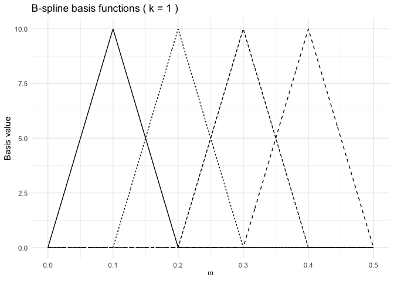

This package accompanies the manuscript Universal Modelling of Auto-covariance Functions via Spline Kernels. It provides the functionality to compute the ACF bases and spectral bases in closed form, as well as some handy tools for plotting and optimisation.
Installation
You can install the development version of bskernel from GitHub with
devtools::install_github("astfalckl/bskernel")Example
The bskern package provides tools for constructing autocovariance functions via the inverse Fourier transform of B-spline basis functions on the spectral domain.
Below, we construct a set of 4 linear (degree 1) B-spline basis functions over the domain [0,0.5], and visualise both the basis and the autocovariance functions they induce.
library(bskernel)
library(ggplot2)
library(tidyr)
k <- 1
n_basis <- 6
domain <- c(0, 0.5)
dx <- diff(domain) / (n_basis - 1)
knots <- seq(domain[1], domain[2], length.out = n_basis)
omega <- seq(domain[1], domain[2], length.out = 1000)
B <- build_bspline_design_matrix(omega, knots, k)
plot_bspline_basis_ggplot(omega, B, k = k)
# Compute autocovariance functions (first 4 basis elements)
tau <- seq(0, 10, length.out = 500)
acf_matrix <- sapply(0:3, function(i) {
Re(inverse_fourier_truncated_power(knots, i, k, tau))
})
acf_df <- as.data.frame(acf_matrix)
acf_df$tau <- tau
acf_long <- tidyr::pivot_longer(
acf_df,
cols = -tau,
names_to = "basis",
values_to = "acf"
)
# Plot ACFs
ggplot(acf_long, aes(x = tau, y = acf, group = basis, linetype = basis)) +
geom_line() +
labs(
x = expression(tau),
y = "Autocovariance",
title = paste("ACFs of linear B-spline basis functions (k =", k, ")")
) +
theme_minimal() +
theme(legend.position = "none")
#> Warning: Removed 4 rows containing missing values or values outside the scale range
#> (`geom_line()`).